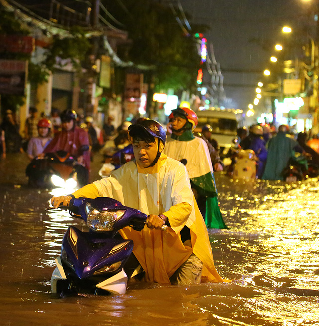

Trận mưa lớn nhất hơn 40 năm qua “nhấn chìm” 59 tuyến phố Sài Gòn
Trận mưa lớn nhất trong hơn 40 năm qua Theo ông Nguyễn Ngọc Công – Giám đốc Trung tâm Điều hành chương trình chống ngập TPHCM (TTCN), cơn mưa chiều 26/9 là cơn mưa cực đoan, lớn nhất từ năm 1975 đến nay. Chỉ trong thời gian khoảng 1 giờ 30 phút, vũ lượng mưa đã đạt đến 204,3 mm, vượt xa tần suất thiết kế của hệ thống thoát nước hiện nay. Theo số liệu thống kê của Đài khí tượng thủy văn khu vực Nam Bộ, đo tại trạm Mạc Đĩnh Chi là 204mm, sau khi trừ sai số vũ lượng trung bình đo được là 179mm.

Theo số liệu thống kê của TTCN, cơn mưa chiều 26/9 bắt đầu từ lúc 16h45 và mở rộng khắp TP, chỉ trong thời gian khoảng 1 giờ 30 phút, vũ lượng mưa đạt phổ biến từ 101mm - 204,3 mm.
Sau trận mưa trên địa bàn thành phố đã xảy ra ngập tại 59 tuyến đường, chiều sâu ngập từ 0,1m - 0,5 m; diện tích ngập từ 100m2 - 30.000m2. TTCN đánh giá cơn mưa chiều 26/9 đã vượt xa tần suất thiết kế của hệ thống thoát nước hiện nay.
Đối với khu vực sân bay Tân Sơn Nhất, vũ lượng đạt 170,3mm (trạm đo Tân Sơn Hòa) và đã xuất hiện ngập cục bộ tại nhiều bãi đậu. Sau hơn 1 giờ thì nước rút hết.
Tại các địa điểm khác, lượng mưa cũng rất cao.
Đánh giá về tình hình ngập khắp địa bàn thành phố sau cơn mưa chiều qua, Chủ tịch UBND TPHCM Nguyễn Thành Phong thừa nhận trận mưa lớn như vậy thì dứt khoát tình trạng ngập rất nặng nề.
Ông cho rằng: “Thực tế đi khảo sát tại các quận, chúng ta thấy ngập cho nhiều nguyên nhân do mưa, triều cường và cả quản lý. Thời gian qua, việc quản lý các công trình thoát nước còn có vấn đề. Để người dân xây nhà ngay trên kênh thoát nước là do quản lý yếu kém”.
Tuy nhiên, trong trận mưa lớn ngày 26/9, không chỉ các tuyến đường cũ mà nhiều tuyến đường mới được đầu tư, nâng cấp hệ thống thoát nước cũng bị ngập như: Phan Xích Long, Trường Sơn, Song hành Quốc lộ 22, Phan Văn Hớn, Nguyễn Ảnh Thủ, Tô Ngọc Vân...
Về tình trạng này, Chủ tịch UBND TP cho rằng: “Sau khi khảo sát, TP sẽ có cuộc họp để có những giải pháp quyết liệt trước mắt. Đồng thời cũng có những giải pháp cần phải có thời gian, lộ trình. Chẳng hạn như cải tạo kênh A41 thoát nước cho sân bay thì phải có thời gian. Tôi rất chia sẻ với người dân trong cơn mưa chiều qua phải gánh chịu cảnh ngập như vậy”, ông Phong nói.
Người đứng đầu chính quyền TP một lần nữa nhấn mạnh: “Sau khi có kết quả khảo sát tình trạng lấn chiếm hệ thống thoát nước, TP sẽ đưa ra giải pháp quyết liệt để chống ngập. Có một vấn đề TP cần rút kinh nghiệm đó là sự đồng bộ trong các giải pháp”.